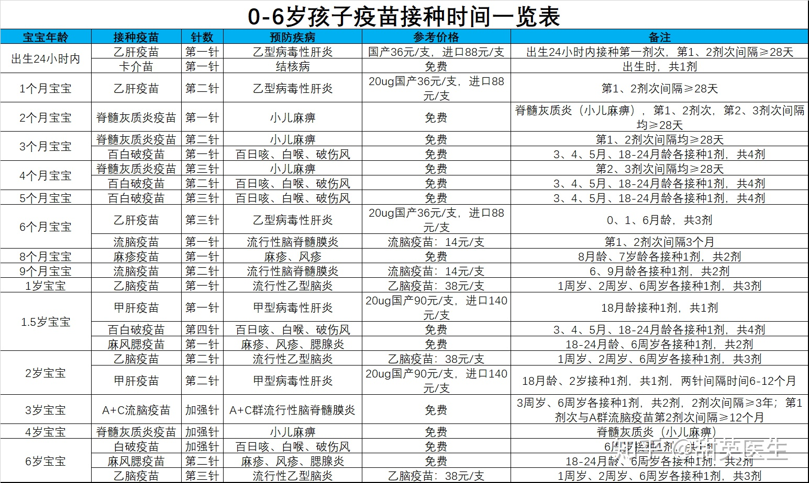
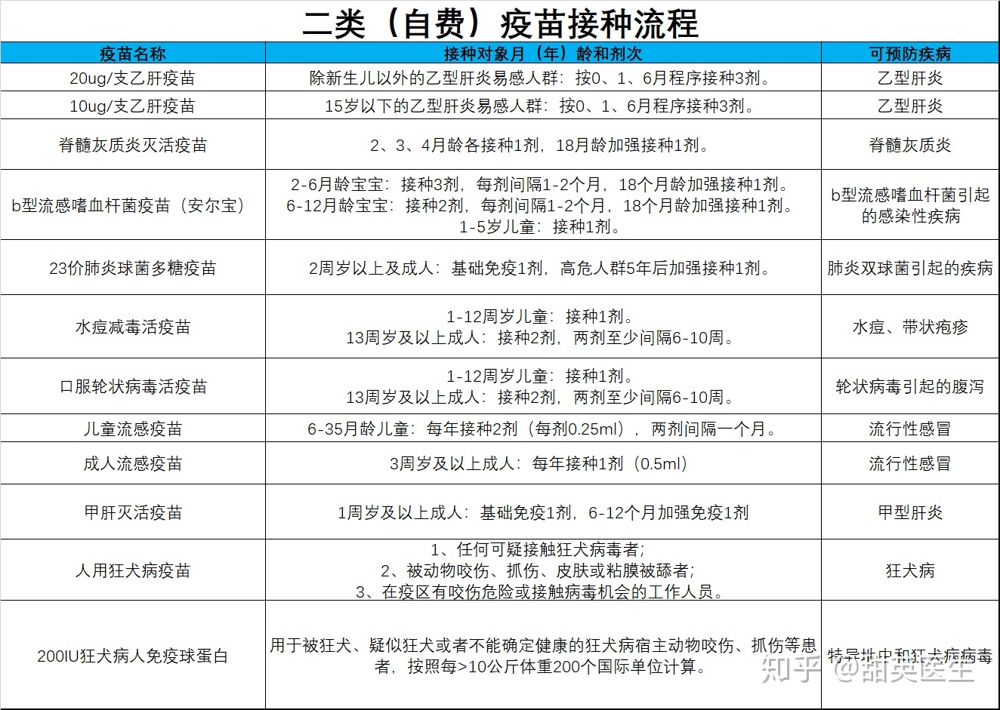
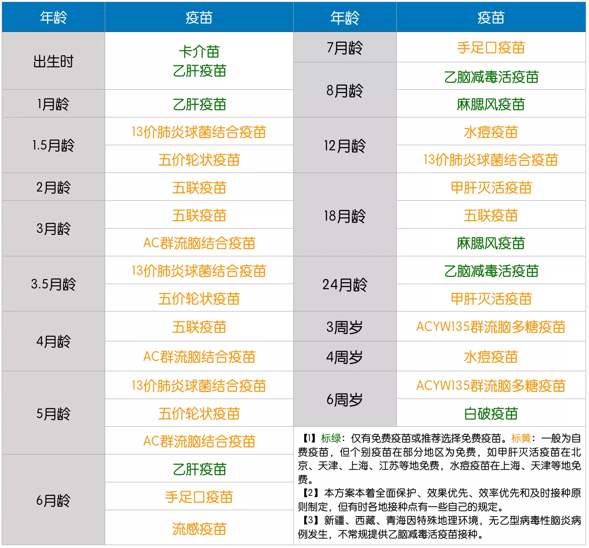
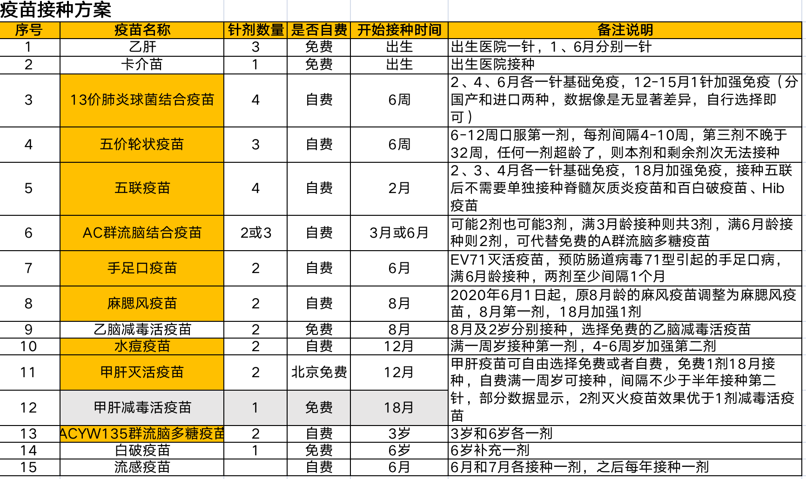
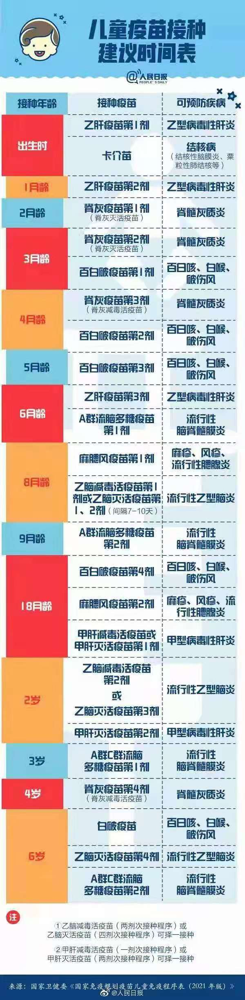

子鼠丑牛寅虎卯兔辰龙巳蛇午马未羊申猴酉鸡戌狗亥猪。
宝宝与宝妈
一、宝宝
疫苗接种计划：疫苗是为了预防、控制传染病的发生、流行而使用的预防性生物制品，分为第一类疫苗和第二类疫苗。
- 出生24小时内要接种第一次乙肝疫苗、卡介苗
- 出生42天后进行第一次体检，主要检测宝宝各项生长发育状况。
- 不要做微量元素检查，已经被禁N年了
- 出生2个月时接种第二次乙肝疫苗和第一次小儿麻痹疫苗
- 出生3个月后接种第一次百日破疫苗和第二次小儿麻痹疫苗
- 出生4个月后接种第二次百日破疫苗和第三次小儿麻痹疫苗
- 出生5个月后接种第三次百日破疫苗
- 出生6个月后接种第三次乙肝疫苗和第一次A群流脑疫苗(流脑疫苗)
- 出生6至7个月之间进行第二次体检，保证宝宝身体健康。
- 出生8个月后接种第一次荨麻疹疫苗(个人情况而定)和第一次乙脑疫苗
- 出生9个月后接种第二次A群流脑疫苗(流脑疫苗)
- 1岁宝宝，接种第一次乙脑疫苗
- 1岁半宝宝，第一次甲肝疫苗、第四次百日破疫苗、第一次麻风腮疫苗
- 2岁宝宝，第二次乙脑疫苗、第二次甲肝疫苗
- 3岁宝宝，加强针A+C流脑疫苗
- 4岁宝宝，加强针小儿麻痹疫苗
- 6岁宝宝，加强针宝日破疫苗、第二次麻风腮疫苗、第三次乙脑疫苗





宝宝喂食
- 初乳营养丰富，切不可丢弃浪费
- 按需喂养，切忌按哭喂养、随意瞎喂
- 纯母乳喂养6个月内可以不喂水，每个乳房喂奶
10~15分钟，每3个小时喂一次 - 奶粉喂养两餐之间需要喂水，尽量避开喂奶前后半小时，否则会导致胃液稀释影响消化
- 正常喂养的宝宝一般不需要补钙，母乳和奶粉都有足够的钙，可适当补充维D，没必要吃维生素AD(鱼肝油，土豪请略过)
- 时间线
- 5个月左右可以添加辅食，最早不能早于4个月，最晚不能晚于8个月，6个月可喂养半流质食物，
7~12个月可添加碎菜末等碎状固体食物 - 6个月左右不要喝豆浆，不要用牛奶、酸奶代替配方奶
- 8个月不要给宝宝喝糖水、冰水
- 9个月可以吃面食、小馒头等
- 10个月不要吃糖和巧克力
- 5个月左右可以添加辅食，最早不能早于4个月，最晚不能晚于8个月，6个月可喂养半流质食物，
- 关于拍嗝
- 六个月之前的宝宝都需要拍嗝
- 拍嗝姿势
- 直立式，比较常用
- 端坐式
- 侧趴式
- 每次拍嗝要控制在10分钟以内，10分钟还没拍出嗝就可以不拍了
- 应对肠胀气
- 让宝宝趴着或者趴在大人身上
- 做排气操
- 母乳喂养的妈妈少吃会引起胀气的食物
- 豆制品，如豆浆、豆腐、豆腐皮、豆腐干等
- 乳制品，如牛奶、酸奶等
- 蔬菜类，如土豆、洋葱、萝卜、南瓜等
- 水果类，如板栗、香蕉、
- 用湿毛巾热敷肚子，温度不要太烫
- 顺指针在宝宝肚子上按摩
- 飞机抱
- 拍嗝
宝宝睡眠
- 出生
1~2个月宝宝每天可以睡16~20小时 - 宝宝睡觉时不要拉窗帘，防止日后发生日夜颠倒的现象
- 宝宝睡觉时不要打扫卧室卫生，防止扬起的灰尘引发宝宝呼吸道方面的疾病
- 出生3个月后才可以枕枕头，高度大约等于毛巾对折的厚度
- 不要用摇晃的方式哄宝宝睡觉，严重时可影响脑发育，造成轻微智力低下
- 不要固定新生宝宝睡眠姿势，预防宝宝经常偏头睡
- 左右侧卧时不要把宝宝耳廓压向前方，经常折叠易变形
- 不要在卧室里摆放植物花卉，防止花粉过敏和植物花卉引来的小虫子
- 不要让宝宝唾在宝爸宝妈中间，可以的话让宝宝自己一张床
- 让宝宝养成良好的睡眠习惯，防止必须要妈妈抱着才能睡着的坏习惯养成
- 出生
宝宝成长
- 6个月宝宝开始有脾气，不要纵容，要让宝宝自己安静下来后再引导
- 8个月宝宝可以练习使用小勺
- 不要经常抱宝宝，不利于独立性格形成
- 45天可以训练宝宝抬头，每天两次每次10秒钟，每次俯卧时间不宜超过一分钟
- 月子期间忌生病感冒的亲友和孩子来房间
- 早教很重要但不能改变智商，早教班没那么重要
- 1岁以内不要带孩子去游泳，婴儿脖圈要慎用
0~3个月看黑白图片培养智力，距离眼镜20厘米处，每周换一张照片，直至宝宝有反应- 4个月宝宝准备纯色的彩色图片，教宝宝认识不同颜色
宝宝穿戴
- 购买宝宝衣服时选择浅色、纯棉质地、连体款
- 清洗宝宝衣服时选择婴儿专用洗剂，与大人衣物分开洗
- 新衣物宝宝不能直接穿，需要清洗干净太阳暴晒过后再穿，防止新衣物上的染料杂质、漂白粉、灰尘刺激婴儿娇嫩的皮肤引发过敏
- 新衣物建议稍微买大一号，宝宝生长速度快，棉质的衣服会缩水，这样穿着正好合适
- 新生儿穿衣应不出汗，小手温热，穿太厚有可能捂出湿疹
- 穿衣重点保护宝宝的小肚子，绝对不能受凉
宝宝卫生
- 忌不清洗头垢，长期留在头皮上会影响头皮的生长和生理机能，清洗时可抹点橄榄油，先软化再清洗，一定不要用手去抠宝宝得头垢
- 忌宝宝洗澡次数过多，每次洗澡建议
5~6分钟为宜，水温38°为宜，洗澡频率3~4天左右洗一次为佳 - 7个月要保护宝宝牙齿，吃完奶后喂几口温开水冲洗口腔，棉签粘淡盐水每天早晚帮宝宝清洗牙齿和牙床
- 如何选纸尿裤
宝宝玩具
- 磁力珠玩具不要买，很容易误吞
- 氢气球不要买，很容易爆炸
- 小黄鸭不要买，已经被曝光内部藏污纳垢
- 带绳子的口哨不要买，很容易勒到脖子
- 不是硬纸板的绘本不要给宝宝买，很容易被撕碎
宝宝健康
匹多莫德已经被禁用了
新生儿体检微量元素检查已经被禁用了
新生儿黄疸，生理性黄疸一般在足月宝宝出生
2~3天后出现，7~10即可自行消退；其他则为病理性黄疸，必要时去医院。新生儿发烧感冒
- 发烧定义(腋温)
37.1～37.9为低热38.0～38.9为中度发热39.0～41.0为高热>41.0为超高热
- 3个月以内的孩子，只要体温高于38度就应该去医院
- 中药灌肠的方式来给宝宝退烧，可能会导致肾衰竭
- 不要给宝宝吃中成药退烧，也不要吃复方感冒药
- 不要多穿衣服捂
- 不要用酒精擦浴
- 有可能出现热性惊厥，15分钟以内不用管
- 当腋温升高到38.5度以上或当宝宝明显因发热而感到不适时，建议使用儿童专用退热药
- 美林(布洛芬)
- 泰若林(对乙酰氨基酚)
- 使用物理降温的方式(不超过38.5度)
- 多喂水
- 温水擦拭全身，水的温度控制在32度到34度之间比较合适，每次擦拭的时间在十分钟以上，每隔半小时到一个小时擦一次，擦拭的重点部位在皮肤有皱褶的地方，比如人体的颈部、腋下、肘部、腹股沟、手心、脚心等处，同时要避开胸部、腹部等部位对冷刺激敏感的部位
- 冰敷前额、头部
- 适宜的室温(22~2度)下洗温水澡
- 使用退热贴
- 99%的孩子会在发生
热性惊厥后的3-5分钟自动解除，超过15分钟则需要去医院
- 发烧定义(腋温)
宝宝烫伤：一冲二脱三泡四盖五送
- “冲”：用流动水冲洗
- “脱”：在水中小心剪开脱去衣服
- “泡”：在冷水中持续浸泡至少30分钟
- “盖”：用干净纱布等覆盖烫处
- “送”：尽快送医院
宝宝早教计划
- 0－6个月家庭早教计划
- 训练感官灵敏，发展运动能力，提高认知水平
- 满月前后训练俯卧时能抬头看物，找玩具，数月后能用双手撑胸
- 二三个月开始做被动婴儿操，宝宝仰卧，抓住宝宝两手，上举、平举、前举、放下等，然后分别一条腿一条腿做下肢操
- 三四个月开始训练仰卧抬腿，仰卧转身侧卧，仰卧左翻身和右翻身到俯卧位；仰卧时训练拉住大人手指坐起
- 多听优美音乐、儿童歌曲、古典乐曲
- 听风声、雨声、虫鸣、鸟叫等和谐音响
- 训练音准与节奏感，为学习语言打好基础
- 看20厘米远(距离逐步拉远)的黑白轮廓，如粗条纹状、斑马状、棋盘状等
- 看红、黄、蓝(逐步增加白、绿、黑)的大块颜色，开发视觉能力，操作可选用色卡训练
- 看色彩鲜艳并带悦耳响声的玩具，逗他视力跟踪，逗他伸手抓握，开发视、听、触觉和抓握能力
- 常拥抱亲吻并按摩婴儿全身皮肤，用光滑的、柔软的、温暖的、凉爽的、粗糙的等物品接触身体，特别是手和脚，开发触觉能力
- 常常轻捏婴儿的10个手指和指尖，捏时告诉他手指名称(对牛弹琴)
- 常用系铃的绳子套住一只手(或脚)让他注意手脚 动作与铃声的关系
- 常让宝宝握住玩具小 棒、铃鼓，让他能丢掉一物再取一物或两手相传等
- 用勺子、筷子轻蘸各种食品、水果、调料的汁水，让婴儿尝各种味道，酸、甜、苦、辣、咸和怪味都让孩子尝到，开发味觉能力
- 培养行为习惯，诱导语言发展
- 爱而外露，微笑亲热，经常体肤接触，拥抱亲吻，逗他快乐而有安全感
- 用手指挠宝宝胸、手心、脚心，逗他回应性地微笑，到笑出声
- 对着宝宝眨眼，伸舌、咂嘴，逗宝宝模仿
- 抱宝宝照镜子，逗他”嗯，嗯”说话，用手去摸，用头去碰
- 让宝宝自己找奶头或捧奶瓶吮奶，培养主动性
- 表情丰富地经常逗宝宝看、听、尝、嗅，触摸皮肤和手指，用各种方法逗他快乐
- 宝宝醒来就对他讲话，轻言细语地做着什么说什么，看见什么讲什么，孩子注视的事物都要讲
- 逐步培养定时吃、喝、睡、玩、听音乐、看世界、换尿布的习惯
- 孩子吃饱以后，哼着儿歌或放音乐，轻轻放入摇篮睡
- 孩子哭闹不要抱起来，可用玩具玩逗，或经轻摇摇篮，培养独立睡觉
- 从孩子的表情和身体抖动状况中摸索孩子快要尿尿和拉屎时，轻轻地把屎把尿；把尿时妈妈嘴里发出”嘘－－”或”嗯”的 声音，培养宝宝不尿裤子和床单
- 宝宝哭了仔细听他的哭声，是饿了，是 渴了，是要抱、要玩、要看什么，还是病了，揣摩他的需要给予满足
- 3个月以后可以竖抱看墙上的书画、装饰品、大字块等，满足他的精神需要
- 把常说、常见事物的字写成大字块贴上墙，5-6个月给他看，读给他听，培养认物和认字敏感，如”妈”、”爸”，发展视觉语言
- 训练感官灵敏，发展运动能力，提高认知水平
- 6－12个月早教
- 训练感官灵敏，发展运动能力，提高认知水平
- 6-7个月
- 多看较远处的事物，如树、花、云、楼房、气车和各种小动物，并不厌其烦地告诉他事物名称
- 指认宝宝和妈妈的眼、鼻、口、耳、手
- 8—9个月
- 近一岁要看圆形、正方形、三角形图并告诉名称
- 让婴儿撕纸玩(纸质要干净的)，看、听、触、动，体验事物的变化
- 做游戏
- 躲猫猫
- 用大手帕盖住妈妈的脸，妈妈不见了，让宝宝拉下手帕，妈妈回来了
- 妈妈躲到宝宝身后，让孩子找妈妈等
- 10—11个月
- 抓住婴儿食指按按扭，开CD机播放音乐
- 每天数分钟儿童节目、动物世界、天气预告等
- 训练独坐、睡下、翻滚、坐起、学爬、学扶物站立、学走、学手足爬上台阶、独站片刻，玩水、学游泳等
- 12个月
- 让宝宝两手敲碰铃，发出悦耳的声音
- 逐步训练按节奏碰打，培养节奏感
- 父母也可握其小手有节奏碰铃，让婴儿抓握各种色彩鲜艳，声音悦耳的玩具，换手玩，摔打玩，抛开又抓回
- 常玩触摸球等
- 6-7个月
- 掌控亲子爱态，培养行为习惯，诱导语言发展
- 6-7个月
- 抱着宝宝室内室外看世界，多看各种小动物和会动的东西
- ”对牛弹琴”地与宝宝说话，指认事物(抱时多用一手托宝宝屁股，一手扶胸，孩子脸朝外便于看世界)
- 8—9个月
- 父母态度要”爱而少露”，不要拥抱亲吻没完
- 孩子哭闹时仍然要平静，不娇惯
- 宝宝要吃要喝，急不可耐而大哭大叫时，应表现出很不在意，让他平静地等待
- 八九个月示范教他给娃娃盖被，会拍娃娃睡觉，会给娃娃洗澡等
- 10—11个月
- 家里的墙上增加大字块，又增加英语短词汇，常读读、指指、认认，每天两次，每次每字一秒钟左右
- 让他喜欢看识字图片，养成看图后翻过来看反面的字的习惯，培养读出声来
- 12个月
- 逐步减少吮吸母乳，不要在孩子毫无准备时突然断奶，经受身心的伤害
- 会坐并添加辅食以后，学会捧杯子喝水
- 不许抱来抱去吃或边玩边吃，一岁左右坐固定的位置上，用小勺自己吃饭
- 6-7个月
- 丰富孩子生活，培养广泛兴趣，发展个性特长
- 音乐
- 天天听音乐及轻柔的歌声
- 经常看大装饰画、书画作品
- 窗玻璃上贴不同颜色的玻璃纸，刺激宝宝色感的发育
- 语言
- 半岁起多看大字宝宝，看小动物、汽车，听念儿歌、诵古诗
- 抱他静静地看大人做事，抱到大街或公园、野外去玩
- 认万物，到室外去玩时看到醒目的广告、标语、招牌、车号等大字都要指一指、认一认、读一读
- 美术
- 训练用蜡笔空中涂画，到纸上涂画(训练右手)
- 动作：
- 训练左右手捏取米饭粒、葡萄干、爆花米
- 训练取物开盖、装物盖盖
- 能识别大小瓶盖的正确搭配
- 九个月学会称呼家人，会做“你好、谢谢、再见、握手、鼓掌、亲 亲、虫虫飞、点头同意、摇头不要”等动作
- 别人叫自己名字他会转头看，会爬过来，或积极应答
- 情商
- 宝宝学走路以后，由牵手到放手走
- 宝宝摔倒了大人不要慌张，不要去扶他抱他，应当平平静静、鼓励他自已爬起来
- 孩子哭了你也表现毫不经意 六七个月开始鼓励宝宝与熟人、生人、小朋友打招呼
- 父母及长辈不要在宝宝面前争吵谩骂，讲话语气要平和，友好
初生婴儿纯如一张白纸，无是非判断力，大人的行为举止将会被他们全盘吸收并模仿，身教胜于言传，为宝宝营造一个友好和诣的家庭环境，增强宝宝的幸福感，研究发现，在父母恩爱的和睦家庭中成长的孩子普遍具有自信乐观开朗大方的优良品格。更容易在社会上取得成功，此点至关重要，将影响终身。
- 音乐
- 训练感官灵敏，发展运动能力，提高认知水平
- 12－24个月早教
- 2－3岁早教
- 3-6岁宝宝家庭早教
- 0－6个月家庭早教计划
二、宝妈
TODO
三、扩展
紧急状况处理
一月睡、二月闹、三月认人、四月翻身、五月出牙、六月辅食、七月坐坐、八月爬爬、九月十月叫爸妈。
一、紧急状况
异物卡喉——海姆立克法
- 1岁以前
- 1岁以后
高热
- 保持呼吸道顺畅
- 物理降温
- 及时就医
受伤流血
- 小伤口应第一时间用生理盐水冲洗，直到伤口不再继续出血。
- 如果伤口不碍事，不包扎其实更利于愈合
- 如果伤口部位容易二次受伤(如肘部)，可以用创可贴或纱布简单包扎
- 伤口深面积大则做好应急处理后及时把宝宝送往医院进行包扎、消毒。
- 小伤口应第一时间用生理盐水冲洗，直到伤口不再继续出血。
高处摔落
- 孩子掉床后，不要把孩子马上抱起，一定要静观10秒钟。
- 先看看孩子有没有活动性出血，如果有则用按压的方式进行止血，并带到医院处理。
- 如果没有出血则引导孩子自己活动，确定四肢、头部、颈部等没有运动障碍才能抱起来哄，否则搂抱孩子容易加重损伤。
消肿
- 48小时候内请用冷敷(必须用毛巾包裹着，避免孩子冷水刺激)收缩血管防止隐性流血，减少出血量
- 如果跌伤48小时候内没有做冷敷处理瘀肿没消，那就必须做热敷，这样有利于消瘀。
流鼻血——切不可让孩子向后仰头鼻孔朝上
- 用出血侧的食指压向鼻中膈方向5～10分钟，然后用冷湿毛巾冷敷鼻子局部，也可以用冷水冲洗，但在不堵住流血部位的情况下很难很快止血。
- 可用消毒的脱脂棉球塞入出血侧的鼻孔压迫止血，让宝宝头部前倾、稍稍低头，有利于鼻腔内的血液经鼻或口腔流出。
- 如果处理效果不好，请速去医院五官科做进一步处理。
烫伤
- 宝宝不小心烫伤，家长应立即用持续冷水冲洗患处10-15分钟，降低被烫伤组织的温度，然后再涂抹专用的烫伤膏。
- 如果宝宝烫伤严重，伤处与皮肤粘连，应快速用剪子剪开，并送往医院医治，转运过程中应该用干净衣被包裹烫伤的创面，以免伤口感染。
小飞虫进耳朵：如果没把握取出请立刻把宝宝送往医院。
- 请注意抱孩子的时候将宝宝的患耳朝下
- 请不要试图用棉签或挖耳勺把虫子取出
蚊虫叮咬——风油精或花露水不适合3岁以内的宝宝用
- 毛巾沾湿冷水对叮咬部位进行冷敷，可以把沾湿水的毛巾放入冰箱冻一会再冷敷
- 按压叮咬处
- 用盐水涂抹在被蚊虫叮咬的地方，这样能使肿块软化，也可起到止痒效果
- 可以把肥皂水涂抹患处以中和蚊酸来帮助消肿止痒，止痒后要用清水洗净涂抹的肥皂水
骨折
- 纸板或三角巾轻轻围绕着受伤的部位，在未受伤的一侧打结固定住。
- 轻轻按住宝宝不要让孩子乱动弹，然后尽快把宝宝送去医院让医生进行拍片、打石膏等处理。
- 注意送医院的路上千万别碰到患肢，保持同一个姿势。
眼睛进入异物
- 准备一些温水，用小汤匙舀水来帮宝宝清洗眼睛，让异物尽快从眼睛出来，最好洗的时间长一点，这样异物会清除的干净。
- 如果旁边没有水，可以让孩子半闭着双眼，让异物随着眼泪流出来。
- 如果实在无法取出异物，可以将孩子送到医院，让医生帮助清理。
宠物咬伤
- 用流动水冲洗伤口5分钟，然后用干净的纱布包扎伤口，并立即送往医院。
- 只要皮肤被咬破，哪怕是很小的伤口，也需注射狂犬疫苗。
二、参考
奶粉品牌
一、概念
奶粉是将动物奶除去水分后制成的粉末，它适宜保存。奶粉是以新鲜牛奶或羊奶为原料，用冷冻或加热的方法，除去乳中几乎全部的水分，干燥后添加适量的维生素、矿物质等加工而成的冲调食品。
1805年，法国人帕芒蒂伦瓦尔德建立了一个奶粉工厂，开始正式生产奶粉。
分类
普通型奶粉
- 全脂奶粉
- 脱脂乳粉
- 速溶奶粉
- 加糖奶粉
- 婴幼儿奶粉
- 特殊配制奶粉
- 中老年奶粉
- 低脂奶粉
- 糖尿病奶粉
- 睡眠奶粉
- 低乳精奶粉
- 双歧杆菌奶粉等
配方型奶粉
- 牛初乳奶粉
- 早产儿奶粉
- 免敏奶粉
- 体弱全营养素
- 免疫奶粉
- 成长奶粉
- 高蛋白奶粉
- 高铁奶粉
- 低脂肪奶粉
- 高钙奶粉
- 酸化奶粉
- 孕妇奶粉等
修养型奶粉
- 孕妇奶粉
- 黄豆奶粉
- 降糖奶粉
- 腹泻奶粉
- 羊奶粉
- 睡眠奶粉
选择标准
奶源和原料
配方
工艺
品牌
宝宝接受度
二、常见品牌
国内
- 飞鹤：奶源取自于北纬47度世界级黄金奶源地带，其实就是黑龙江齐齐哈尔地带。
- 君乐宝：奶源地主要集中在河北省(石家庄、行唐、保定、邢台、徐州、张家口)。
- 完达山：奶源均来自黑龙江地区的自建牧场奶源。
- 合生元：国产品牌，与法国公司合作，奶源也均取自于法国。
- 旗帜：奶源为河北自控牧场。
- 贝因美：奶源为黑龙江自控牧场。
- 澳优：澳大利亚奶源。
- 圣元：法国奶源。
- 伊利：内蒙古、黑龙江自控牧场。
- 三元：北京、河北自控牧场。
- 雅士利：分新西兰奶源和世界奶源。
- 明一：荷兰奶源。
- 喜安智：新西兰奶源。
- 燎原：甘肃、青海奶源。
- 南山：奶源分湖南城步苗族自治县南山牧场和内蒙古呼伦贝尔市特泥河农牧场。
国外
- 爱他美(Aptamil)：德国品牌，是德国市场份额第一的奶粉，也是欧洲销量最好的奶粉之一。
- 爱他美与诺优能、可瑞康三个奶粉品牌均属于荷兰纽迪希亚(NUTRICIA)营养制品有限公司旗下。
- 喜宝(HiPP)：德国品牌，1899年由
JOSEF HIPP创建，除了奶粉，还有母婴用品、儿童玩具等。 - 特福芬(Töpfer)：德国品牌，由德国特福芬公司，创建于1911年，总部位于阿尔卑斯山脚下，拥有有机奶粉、有机婴儿奶粉、有机护肤品、有机饮料、保健食品、药品等针对母婴领域的系列产品。
- 美素(Friso)：荷兰品牌，是荷兰皇家菲仕兰旗下的婴幼儿奶粉品牌，其母公司创建于1871年，迄今已有140多年的历史。
- 牛栏(Cow&Gate)：荷兰品牌，1901年荷兰纽迪希亚(NUTRICIA)营养制品有限公司诞生，牛栏奶粉隶属于荷兰营养旗下产品。
- 佳贝艾特(kabrita)：荷兰品牌，属于海普诺凯乳业集团，旗下主要的产品有新鲜羊奶、羊酸奶、羊乳酪、婴幼儿配方羊奶粉、妈妈羊奶粉，是世界上较早推出的婴幼儿羊奶粉的品牌。
- 诺优能(Nutrilon)：荷兰品牌，沿承NUTRICIA纽迪希亚科研中心在婴幼儿营养领域100多年的研究成果。
- 惠氏(Wyeth)：美国品牌，奶源来自于新西兰、澳洲、爱尔兰等优质牛奶产地。
- 美赞臣(Meadjohnson)：美国品牌，公司创立于1905年，创始人为爱德华·美赞臣，公司总部位于美国伊利诺斯州的格伦维尤。
- 雅培(Abbott Laboratories)：美国品牌，1888年雅培药厂由创办人华莱士·雅培(Wallace C. Abbott)博士在美国芝加哥成立。
- 亨氏(HEINZ)：意大利品牌，奶粉均由英国坎布里亚郡的专业工厂生产包装，奶源来自于欧洲等产地。
- 贝拉米(Bellamy’s Organic)：澳大利亚品牌，总部位于澳大利亚塔斯马尼亚岛，为婴幼儿和儿童提供一系列
100%有机认证的婴幼儿食品及奶粉。 - 德运(DEVONDALE)：澳大利亚品牌，隶属于澳大利亚Murray Goulburn乳业公司。Murray Goulburn公司创立于1950年，拥有全澳大利亚33%以上的原奶，占全澳大利亚乳品出口量40%的份额。
- A2：澳大利亚品牌，与2000年创立于新西兰，其所有的A2奶牛都是通过DNA测试验证，并通过认证以确保产出的牛奶只含有A2型的β-酪蛋白。
- 多美滋(Dumex)：欧洲品牌，在中国的主要产品包括金装多美滋，标准装多美滋、金装贝乐嘉。
- 明治(Meiji)：日本品牌，乳源取自澳大利亚。
- 安满(Anmum)：新西兰品牌，隶属于恒天然集团，奶源也取自于新西兰。
- 培芝(Sunplus)：新西兰品牌，主打产品是初乳奶粉，这种奶粉不同于一般婴儿奶粉，它是由免疫因子、生长因子、其他营养成分按照一定比例搭配而成，接近人体的初乳。
- 安佳(Anchor)：新西兰品牌，1886年诞生于新西兰，产品热销全球70多个国家和地区。
- 咔哇熊(Cowala)：新西兰品牌，2014年被恒大乳业集团收购。
- 可瑞乐(Keerayla)：新西兰品牌，是新西兰New milk旗下的婴幼儿奶粉品牌，2013年6月开始正式进入中国市场。
- 雀巢(Nestle)：瑞士品牌，雀巢公司由亨利·内斯特莱(Henri Nestle)于1867年创建，总部设在瑞士日内瓦湖畔的沃韦(Vevey)，是世界最大的食品制造商。
- 爱他美(Aptamil)：德国品牌，是德国市场份额第一的奶粉，也是欧洲销量最好的奶粉之一。
三、参考
衣服品牌
一、选择标准
总体原则
- 舒适性
- 透气性
- 便捷性
- 安全性
按年龄段
- 0-2月龄——和尚服
- 3-5月龄——连体衣(哈衣)
- 6-12月龄——连体衣过渡上下分体衣裤
- 12月龄后——上下分体衣裤
二、常见品牌
国内
- 全棉时代Purcotton——深圳
- 爱帕aqpa——深圳
- 爬爬PAPA——浙江
- 戴维贝拉davebella——杭州
- 巴拉巴拉Balabala-浙江，森马旗下品牌
- 童泰Tongtai——河北
- 优贝宜yobeyi——漳州
- 英氏YeeHoO——广州珠海
- 马克珍妮marcjanie——杭州
- 小云朵moimoln——查不到信息
- 基诺浦——杭州
- 江博士——香港
- 卡特兔——江西
- 幼岚All Blu——上海
- 好孩子GoodBaby——江苏昆山
- 贝贝怡Bornbay——厦门
- 舒贝怡——福州
- 棉花堂——上海
- 博睿恩——无锡
- 乖奇熊——惠州
国外
- 卡特Carter’s——美国
- 斯凯奇SKECHERS——美国
- 耐克nike——美国
- Mothercare——英国
- 千趣会SENSHUKAI——日本
- mikihouse——日本
- MOONSTAR——日本
- 优衣库UNIQLO——日本
- 阿和路如Allo&lugh——韩国
- Paw in Paw——韩国
- Old Soles——澳大利亚
- MELISSA——巴西
- 阿迪达斯adidas——德国
- 泰兰尼斯TARANIS——英国
- littlebluelamb——北美
- mini boden——英国
- 迪卡侬——法国
- 拉比LABI BABY——意大利
三、参考
玩具品牌
玩具，泛指可用来玩的物品，玩玩具在人类社会中常常被作为一种寓教于乐的方式。
一、选择标准
- 安全性
- 趣味性
- 益智性
- 适龄性
- 实用性
二、常见品牌
- 国产
- 广东奥贝Auby
- 广东骅威HUA WEI
- 广东邦宝BanBao
- 广东奥迪双钻
- 香港伟易达VTECH
- 广州巧虎，隶属于日本贝乐思
- 汕头小鲁班sluban，和丹麦乐高积木类似
- 安徽启蒙益智
- 深圳火火兔
- 杭州可优比
- 国外
- 丹麦乐高lego
- 韩国麦格弗Magformers
- 美国迪士尼DISNEY
- 美国孩之宝Hasbro
- 美国绘儿乐Crayola
- 美国美泰mattel
- 费雪Fisher Price
- 芭比
- 美国女孩
- 火柴盒
- 风火轮
- 托马斯
- 美国拉玛泽Lamaze
- 意大利智高Chicco
- 日本万代
- 日本多美
- 德国hape
- 德国仙霸
三、参考
纸尿裤品牌
一、定义
尿不湿是婴儿常用的日用品，是纸尿片、纸尿裤、拉拉裤的统称。干爽的尿不湿可以使婴儿保持整夜的安睡，由于吸水性强，被俗称为“尿不湿”。
二、品牌
国产品牌
- 雀氏CHIAUS(福建)
- 凯儿得乐(深圳)
- 爱乐(福建)
- 吉氏(广东)
- babycare(上海)
- 安儿乐ANERLE(香港)
- 爹地宝贝Daddy Baby(福建)
- 菲比Fitti(香港)
- 露安适Lelch(广州)
- 小鹿叮叮(北京)
- 爸爸的选择(北京)
- 兔头妈妈(北京)
- 欧贝儿(大连)
- 百诺恩(汕头)
美国
- 好奇
- 帮宝适
日系(小
*本做东西还是挺用心的)- 花王KAO
- 大王GOO.N
- 尤妮佳Moony
- 妈咪宝贝
- 妮飘Genki
- 贝亲pigeon
丹麦
- 班博BANBO
荷兰
- 米菲Miffy
加拿大
- 小萌希奥
英国
- 兰斯贝儿